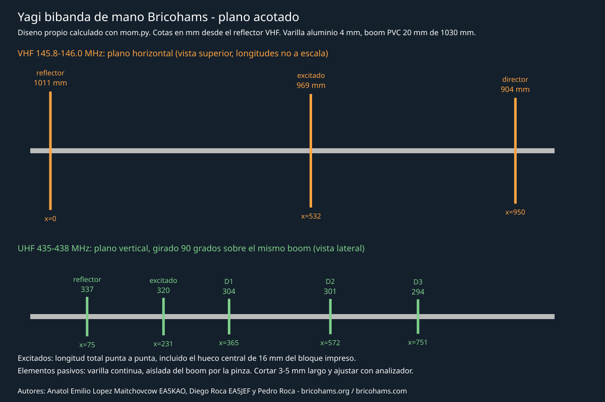
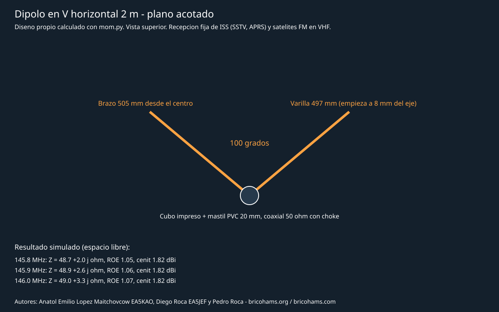
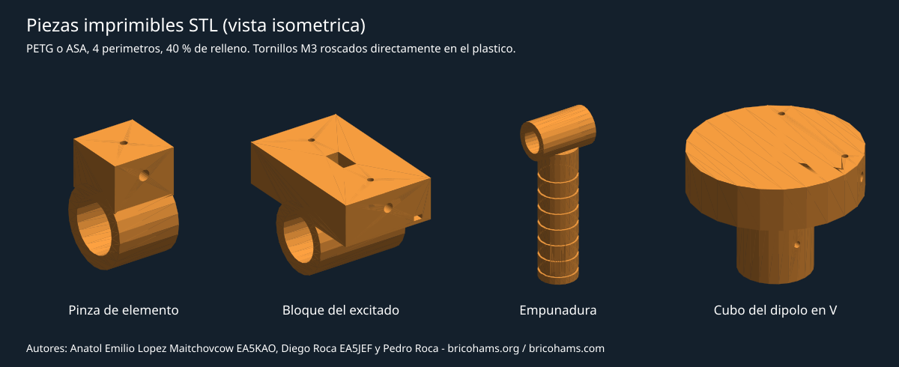

Satellitenantennen: Bricohams-Designs und druckbare Teile
Autoren: Anatol Emilio Lopez Maitchovcow EA5KAO, Diego Roca EA5JEF und Pedro Roca, Gründer und Vorstandsmitglieder von Bricohams. Informationen: https://bricohams.org und https://bricohams.com.
Antennenabschnitt des Leitfadens Erste Schritte mit Satelliten. Die Designs und Teile sind eigene Entwicklungen von Bricohams: Maße mit einem für dieses Projekt geschriebenen Solver für die Momentenmethode berechnet, Teile per Code modelliert. Sie reproduzieren nicht die Antennendesigns von PY4ZBZ oder PY5LO aus dem Leitfaden von PT2VM, deren Verwendung dem Autor gestattet wurde.
> Status: simuliertes Design, nicht gebaut oder vermessen. Die Werte > stammen aus einer Freiraumsimulation. Bisher wurde keine Antenne gefertigt > oder mit einem Analysator vermessen. Schneide die Stäbe 3-5 mm länger und > stimme sie vor dem Senden mit einem Antennenanalysator (NanoVNA oder ähnlich) ab.
Welche Antenne solltest du wählen
| Antenne | Verwendung | Simulierter Gewinn | Schwierigkeit |
|---|---|---|---|
| Handgeführte Dualband-Yagi | FM-Satelliten mit Uplink und Downlink in verschiedenen Bändern (SO-50, ISS-Repeater, PO-101) | 8,4 dBi VHF / 11,4 dBi UHF | Mittel |
| Horizontaler V-Dipol für 2 m | Fester Empfang ohne Nachführung: SSTV und APRS der ISS, VHF-Downlinks | 1,8 dBi im Zenit | Einfach |
| Originalantenne des Funkgeräts | Erste ISS-Empfangsversuche bei hohen Überflügen | Deutlich geringer als bei den obigen | Keine |
Mit der Originalantenne ist die ISS bei hohen Überflügen hörbar; für den Betrieb mit leistungsschwachen FM-Satelliten verwendet man üblicherweise eine von Hand ausgerichtete Richtantenne. Ein langer Stab oder ein Gegengewicht helfen etwas, ersetzen aber keine Richtantenne.
Handgeführte Dualband-Yagi

Zwei Yagis teilen sich einen nicht leitenden Boom: 3 Elemente für 2 m in der horizontalen Ebene und 5 Elemente für 70 cm in der vertikalen Ebene, um 90 Grad gedreht. In orthogonalen und zentrierten Ebenen zeigt die Simulation keine nennenswerte Kopplung zwischen den Bändern: Jede Yagi funktioniert gleich gut mit oder ohne die andere. Eine reale Fehlausrichtung der Elemente erzeugt eine geringe Kopplung.
Maße
Maße in mm, vom VHF-Reflektor aus gemessen (x = 0). Längen sind Spitze zu Spitze; die geteilten Strahler umfassen die zentrale Lücke von 16 mm im Druckblock, sodass jede Hälfte (Länge − 16) / 2 misst.
| Band | Element | Länge (mm) | Position x (mm) | Je Hälfte (mm) |
|---|---|---|---|---|
| VHF | Reflektor | 1011 | 0 | — |
| VHF | Strahler | 969 | 532 | 476,5 |
| VHF | Direktor | 904 | 950 | — |
| UHF | Reflektor | 337 | 75 | — |
| UHF | Strahler | 320 | 231 | 152 |
| UHF | Direktor 1 | 304 | 365 | — |
| UHF | Direktor 2 | 301 | 572 | — |
| UHF | Direktor 3 | 294 | 751 | — |
PVC-Rohr mit 20 mm Durchmesser, etwa ein starres Elektroinstallationsrohr, etwa 1030 mm lang. Die VHF- und UHF-Teile liegen entlang des Booms mindestens 35 mm auseinander; das Designskript prüft dies.
Simulierte Leistung
| MHz | Z (Ω) | SWR 50 Ω | Gewinn (dBi) | Vorwärts/Rückwärts (dB) |
|---|---|---|---|---|
| 145,8 | 38,0 + j2,6 | 1,32 | 8,43 | 15,0 |
| 145,9 | 37,9 + j3,3 | 1,33 | 8,44 | 15,0 |
| 146,0 | 37,9 + j4,1 | 1,34 | 8,45 | 14,9 |
| 435,0 | 39,1 − j0,7 | 1,28 | 11,32 | 15,2 |
| 436,5 | 38,6 − j0,3 | 1,30 | 11,37 | 15,6 |
| 438,0 | 37,1 + j0,0 | 1,35 | 11,42 | 16,2 |
Das Design priorisiert Gewinn und Vorwärts-/Rückwärtsverhältnis mit einem SWR unter 1,4 im gesamten Satellitensegment. Der Strahler wird direkt mit einem 50-Ω-Koaxialkabel ohne Anpassnetzwerk gespeist. Ein SWR von 1,3-1,35 reflektiert etwa 2 % der Leistung; für ein Handfunkgerät ist das akzeptabel.
Materialien
- PVC-Rohr mit 20 mm Durchmesser, 1030 mm.
- Aluminiumstab mit 4 mm Durchmesser, insgesamt etwa 5,5 m. Messingstab ist ebenfalls geeignet; für ein Maßband ist ein anderer Block erforderlich.
- Gedruckte Teile: 6 Elementklemmen, 2 Strahlerblöcke und 1 Griff; siehe STL-Teile.
- M3 x 8-Schrauben zur Befestigung der Stäbe und Teile sowie M3 x 10 mit Ösenkabelschuh für die Strahler.
- Zwei Stücke dünnes 50-Ω-Koaxialkabel, etwa RG-316 oder RG-58, jeweils mit Gleichtaktdrossel: einige Ferritperlen am Block oder 4-5 Windungen des Koaxialkabels mit etwa 3 cm Durchmesser. Drossel mit dem Analysator prüfen.
- Ein VHF/UHF-Diplexer zum Verbinden beider Strahler mit einem Downlink, wenn du ein einzelnes Funkgerät wie den UV-K5 verwendest. Bei zwei Funkgeräten wird jedes Koaxialkabel an eines angeschlossen.
Montage
- Schneide die Stäbe 3-5 mm länger als in der Tabelle angegeben und feile die Enden. Verwende Endschutz: Schrumpfschlauch oder Kappen. Beim Drehen einer handgeführten Antenne kann ein Ende leicht nahe ans Gesicht gelangen.
- Markiere die x-Positionen mit Klebeband auf dem Boom. Die VHF-Stäbe liegen horizontal, die UHF-Stäbe sind um 90 Grad auf dem Boom gedreht.
- Setze den Stab mittig in jede Klemme und ziehe ihn mit der oberen M3-Schraube fest. Befestige die Klemme mit der unteren M3-Schraube am Boom.
- Führe in den Strahlerblöcken jede Hälfte bis zum Grund der Bohrung ein. Die obere Schraube befestigt sie und dient als Anschluss: Schirm auf einer Seite und Innenleiter auf der anderen, mit Ösenkabelschuh. Anschlüsse vor Feuchtigkeit schützen.
- Führe die Koaxialkabel mit Kabelbindern entlang des Booms zum Reflektor, durch den Stift des Blocks, mit der Drossel nahe der Speisung.
- Montiere den Griff zwischen dem UHF-Strahler (231) und Direktor 1 UHF (365), etwa bei x ≈ 300. Verschiebe ihn, bis die Antenne ausbalanciert ist.
Abgleich mit einem Analysator
- Miss das SWR jedes Bands einzeln, während das andere Koaxialkabel mit 50 Ω abgeschlossen oder an den Diplexer angeschlossen ist.
- Liegt das Minimum unterhalb des Segments, kürze den Strahler auf beiden Seiten gleichmäßig in 1-2-mm-Schritten. Liegt es darüber, ist der Strahler zu kurz: Ersetze ihn.
- Strebe kein SWR von 1,0 an: Der direkte Strahler ist konstruktionsbedingt auf etwa 38 Ω ausgelegt. Wichtig ist, dass das Minimum bei 145,9 und 436,5 MHz liegt.
- Halte dich bei der Messung von Metalltischen und Personen fern. Richte die Antenne zum Himmel aus.
Horizontaler V-Dipol für 2 m

Feste Antenne ohne Nachführung für den ISS-Empfang, etwa SSTV auf 145,800 MHz und APRS auf 145,825 MHz, sowie für VHF-Downlinks. Die V-förmigen Arme mit 100 Grad füllen die Nullstellen des geraden Dipols teilweise auf und nähern die Impedanz 50 Ω an.
| Parameter | Wert |
|---|---|
| Winkel zwischen den Armen | 100 Grad |
| Arm ab Mitte | 505 mm |
| Stab je Arm | 497 mm: beginnt 8 mm von der Achse entfernt im gedruckten Würfel |
| Simuliertes Z bei 145,8 / 145,9 / 146,0 MHz | 48,7 + j2,0 / 48,9 + j2,6 / 49,0 + j3,3 Ω |
| SWR 50 Ω | 1,05-1,07 |
| Gewinn im Zenit | 1,82 dBi |
| Azimutale Welligkeit bei 30 Grad Elevation | 5,5 dB |
Montiere ihn horizontal an einem 20-mm-PVC-Mast mit dem gedruckten Würfel und einer Gleichtaktdrossel am Koaxialkabel, etwa 0,5-1 m über Dach oder Boden. Die Höhe über Grund verändert das reale Diagramm: Die Simulation gilt im Freiraum. Für Sendebetrieb bei niedrigen Überflügen ist die Yagi vorzuziehen.
Druckbare STL-Teile

| Teil | Datei | Anzahl | Funktion |
|---|---|---|---|
| Elementklemme | pinza-elemento.stl | 6 | Befestigt ein passives 4-mm-Element am 20-mm-Boom |
| Strahlerblock | bloque-excitado.stl | 2 | Zwei isolierte Hälften mit 16-mm-Lücke, M3-Anschlüssen und Koaxialkanal |
| Griff | empunadura.stl | 1 | 32-mm-Griff, hohl und gerippt, wird am Boom befestigt |
| Würfel für V-Dipol | cubo-dipolo-v.stl | 1 | Arme mit 100 Grad, M3-Anschlüsse und Aufnahme für 20-mm-Mast |
Empfohlener Druck:
- Material: PETG oder ASA. PLA verformt sich in der Sonne.
- Außenwände und Füllung: 4 Außenwände und 40 % Füllung.
- Schichthöhe: 0,2 mm.
- Ausrichtung: Boomring horizontal und auf der flachen Seite des Vorsprungs aufliegend. Den Würfel mit der Aufnahme nach unten drucken.
Bohrungen mit Spiel:
- Boom: 20,4 mm.
- Stab: 4,3 mm.
- Direktes M3-Gewinde: 2,8 mm.
Wenn dein Drucker Bohrungen zu eng ausführt, ändere die Konstanten BOOM, ROD und M3_TAP in generar_stl.py und generiere die Teile erneut.
Das Skript prüft, ob jede STL ein geschlossener, einteiliger Körper ist. Volumen- und Maßangaben stehen in piezas.json.
Berechnungsmethode und Validierung
Dateien unter hardware/antenas:
| Skript | Funktion |
|---|---|
mom.py | Eigener Solver für dünne Drähte mit Momentenmethode (Harrington): Knotenströme, segmentweise Lasten, reduzierter Kern und analytisch integrierter statischer Term |
disenar.py | Optimiert die Maße mit Nelder-Mead auf maximalen Gewinn mit SWR ≤ 1,3-1,35 und Vorwärts/Rückwärts ≥ 15 dB, prüft die Dualbandkombination und den Teileabstand und schreibt resultados.json |
generar_stl.py | Modelliert Teile mit manifold3d und schreibt STL sowie piezas.json |
vistas.py | Zeichnet Maßzeichnungen und Ansichten der Teile in docs/atlas |
Validierung des Solvers anhand des Referenzdipols λ/2:
- Bei einem Radius von 10⁻⁵ λ ergibt sich Z ≈ 78 + j43 Ω statt des klassischen Werts 73 + j42,5 Ω. Die Differenz entsteht durch die Delta-Gap-Speisung.
- Bei einem Radius von 10⁻³ λ resoniert der 0,475-λ-Dipol bei 71 − j3,5 Ω.
- Die Richtwirkung beträgt 2,15 dBi. Der aus der Eingangsleistung berechnete Gewinn stimmt mit dem Integral des Diagramms überein; die Leistung bleibt erhalten.
Der erwartete Fehler bei der Resonanzfrequenz beträgt einige Prozent. Deshalb werden die Elemente länger geschnitten und anschließend angepasst.
Grenzen des Modells:
- Freiraum, ohne Boden oder Körper des Bedieners.
- Perfekte Leiter.
- Der Kunststoff der Klemmen, der Resonanz geringfügig nach unten verschiebt, der Boom, das Koaxialkabel und der Diplexer werden nicht modelliert.
- Dies ist keine Messung und kein Leistungszertifikat.
Um aus dem Ordner hardware/antenas neu zu generieren:
python -m venv .venv
.venv\Scripts\python -m pip install -r requirements.txt
.venv\Scripts\python disenar.py
.venv\Scripts\python generar_stl.py
.venv\Scripts\python vistas.pySicherheit und Rechtmäßigkeit
- Zum Senden ist eine Amateurfunkgenehmigung erforderlich. Zum Zuhören nicht.
- Mit 5 W und einer 11-dBi-Yagi nicht auf Personen in der Nähe richten und beim Senden Elemente vom Gesicht fernhalten.
- Diese Antennen nicht auf nicht zugelassenen Bändern oder Satelliten verwenden, zum Beispiel militärischen UHF-Satelliten.